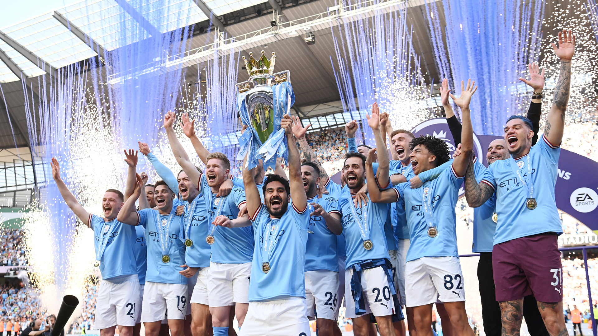

Home
Geschiedenis
Bekers
Spelers
Bronnen

Bekers
1x Champions league
1x UEFA SuperCup Winner
9x Premier League
1x Cup Winners
7x English 2nd Tier Winners
9x English League Cup
6x Community Shield
7x FA Cup